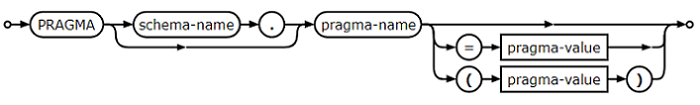
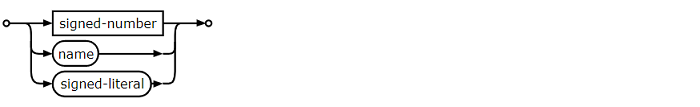
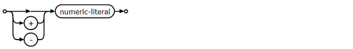

Оператор PRAGMA - это расширение SQL, специфичное для SQLite, которое используется для изменения работы библиотеки SQLite или для запроса библиотеки SQLite для внутренних (не табличных) данных. Оператор PRAGMA выполняется с использованием того же интерфейса, что и другие команды SQLite (например, SELECT, INSERT), но отличается в следующих важных отношениях:
API языка C для SQLite предоставляет файловый элемент управления SQLITE_FCNTL_PRAGMA, который дает реализациям VFS возможность добавлять новые операторы PRAGMA или переопределять значение встроенных операторов PRAGMA.
pragma-stmt:
pragma-value:
signed-number:
Прагма может принимать либо ноль, либо один аргумент. Аргумент может быть заключен в круглые скобки или может быть отделен от имени прагмы знаком равенства. Два синтаксиса дают одинаковые результаты. Во многих прагмах аргумент является логическим. Логическое значение может быть одним из:
1 yes true on
0 no false off
Аргументы ключевых слов могут при желании заключаться в кавычки. (Пример: 'yes' [FALSE].) Некоторые прагмы принимают строковый литерал в качестве аргумента. Когда прагма принимает аргумент ключевого слова, он обычно также принимает числовой эквивалент. Например, «0» и «нет» означают то же самое, что и «1» и «да». При запросе значения параметра многие прагмы возвращают число, а не ключевое слово.
Прагма может иметь необязательное имя схемы перед именем прагмы. Имя схемы - это имя базы данных, созданной с помощью ATTACH, или "main" или "temp" для основной базы данных и базы данных TEMP. Если необязательное имя схемы опущено, предполагается «основная». В некоторых прагмах имя схемы не имеет смысла и просто игнорируется. В документации ниже прагмы, для которых имеет смысл имя схемы, показаны с «схемой». префикс.
К PRAGMA, возвращающим результаты и не имеющим побочных эффектов, можно получить доступ из обычных операторов SELECT как функций, возвращающих табличное значение. Для каждой участвующей PRAGMA соответствующая возвращающая табличное значение функция имеет то же имя, что и PRAGMA, с 7-символьным префиксом pragma_. Аргумент и схема PRAGMA, если таковые имеются, передаются в качестве аргументов функции, возвращающей табличное значение.
Например, информацию о столбцах в индексе можно прочитать с помощью прагмы index_info следующим образом:
PRAGMA index_info('idx52');
Или тот же контент можно прочитать, используя:
SELECT * FROM pragma_index_info('idx52');
Преимущество формата функции с табличным значением состоит в том, что запрос может возвращать только подмножество столбцов PRAGMA, может включать предложение WHERE, может использовать агрегатные функции, а функция с табличным значением может быть только одним из нескольких источников данных в присоединиться. Например, чтобы получить список всех проиндексированных столбцов в схеме, можно запросить:
SELECT DISTINCT m.name || '.' || ii.name AS 'indexed-columns'
FROM sqlite_schema AS m,
pragma_index_list(m.name) AS il,
pragma_index_info(il.name) AS ii
WHERE m.type='table'
ORDER BY 1;
ATTACH ':memory:' AS 'information_schema';